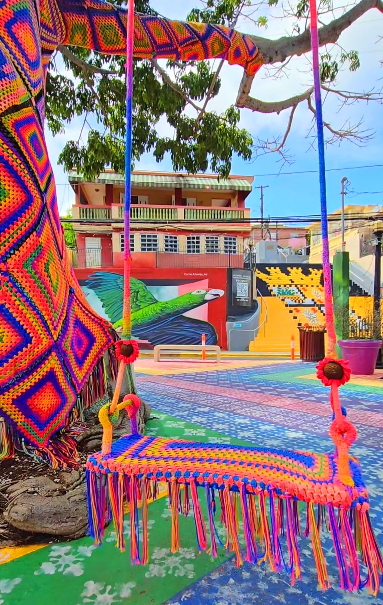
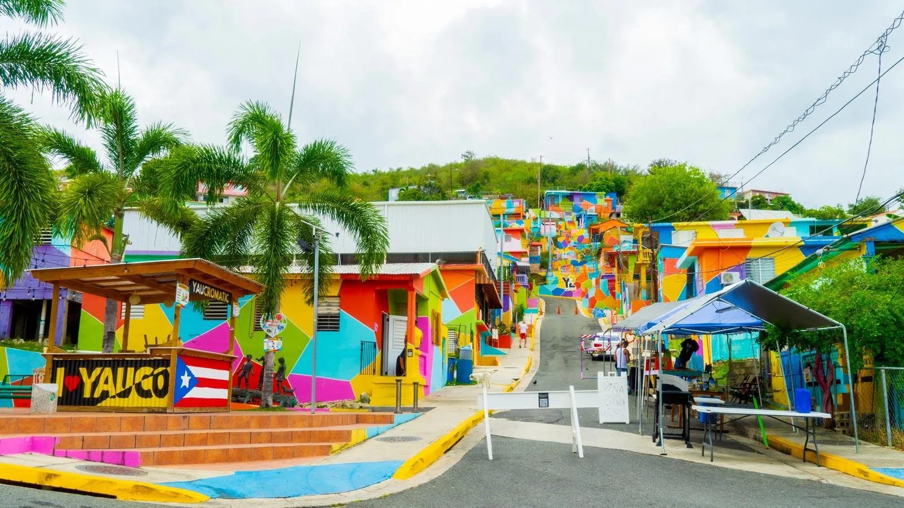
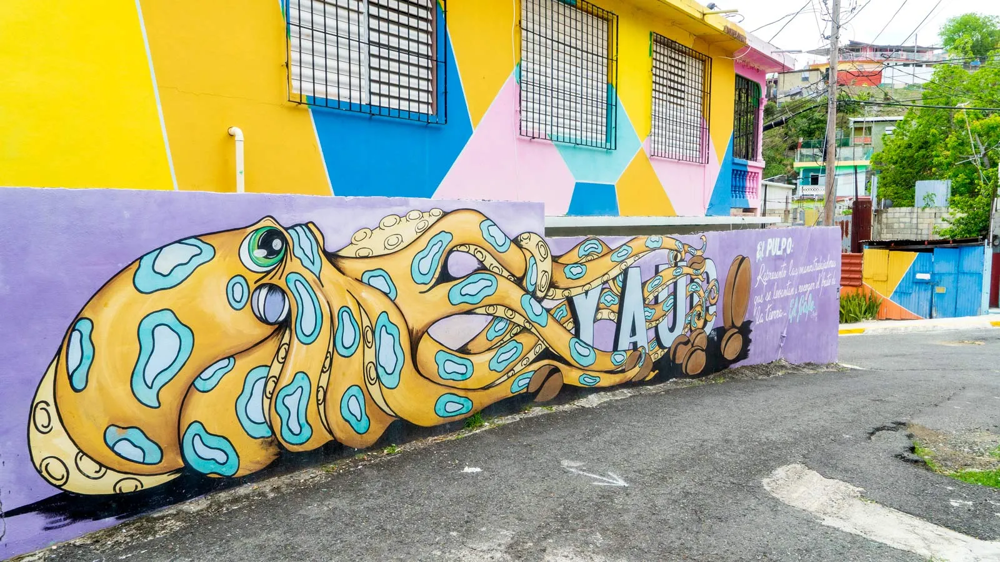
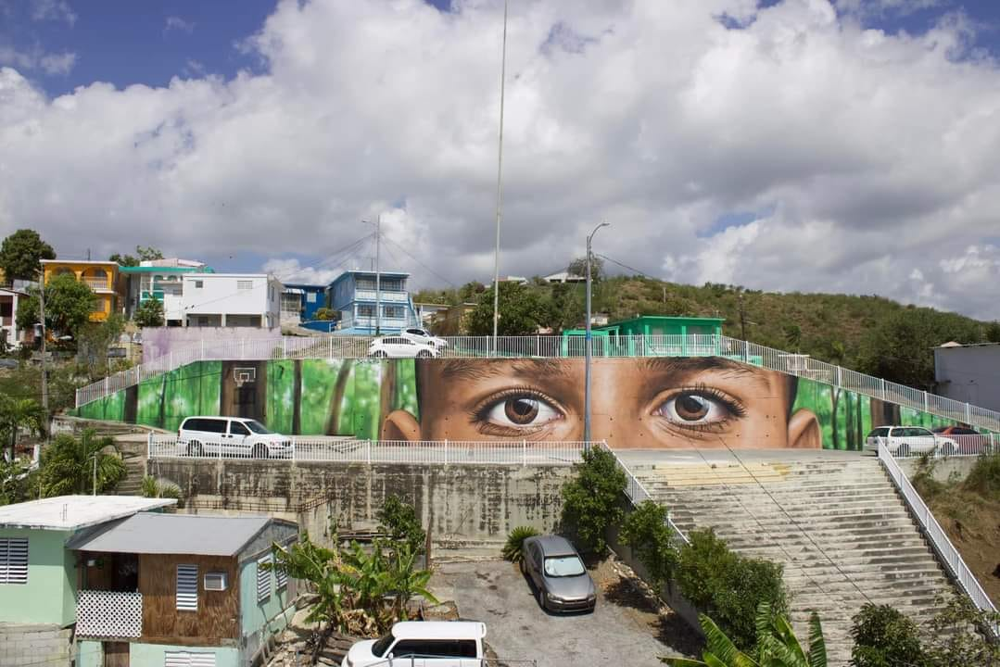
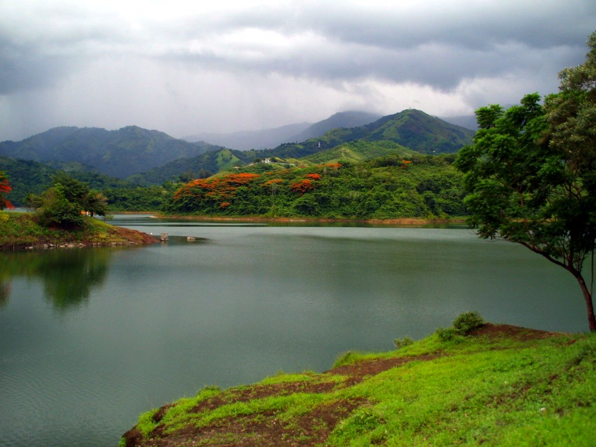
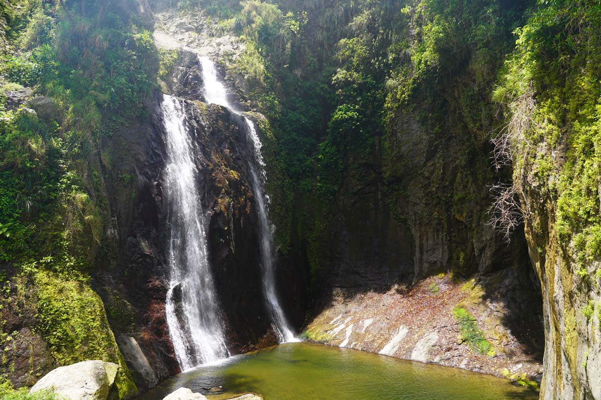
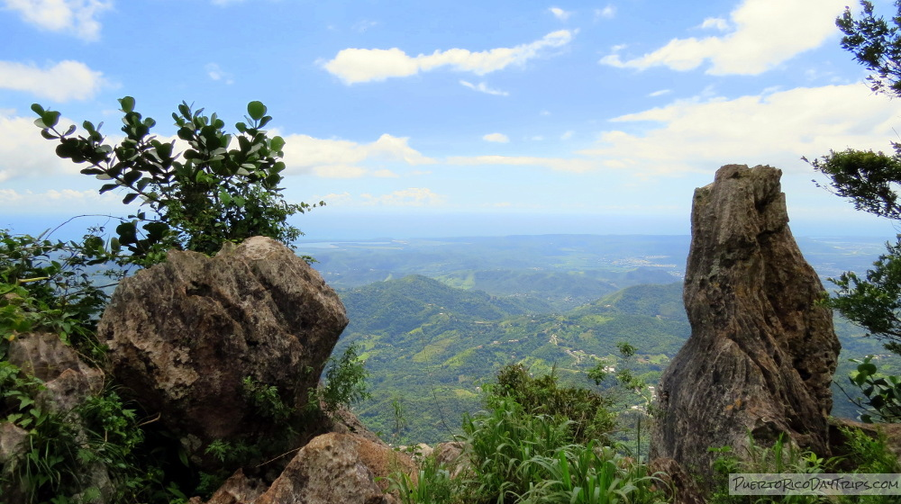
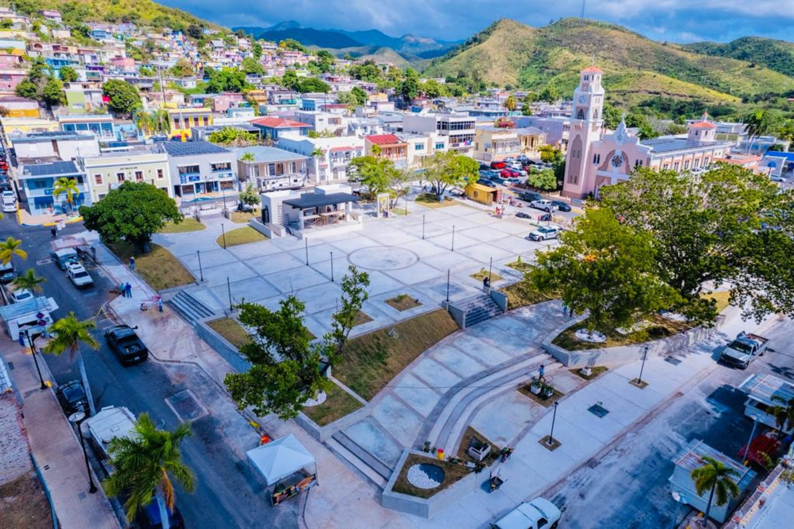

Atractivos
Explora Yauco
Video que muestra algunos de los principales atractivos turísticos del municipio de Yauco.
Yaucromatic
Yaucromatic es uno de los proyectos artísticos más reconocidos de Yauco. A través de murales y fachadas llenas de color, esta iniciativa ha transformado varias comunidades en un atractivo turístico y cultural.





Lago Luchetti

El Lago Luchetti es un importante espacio natural del municipio. Es visitado por personas que disfrutan de la naturaleza, las vistas panorámicas y los paisajes del suroeste de Puerto Rico.
Salto Santa Clara

El Salto Santa Clara es otro de los atractivos naturales de Yauco. Su entorno lo convierte en un punto llamativo para quienes aprecian espacios de aventura y belleza natural.
Cerro Rodadero

El Cerro Rodadero es reconocido por sus vistas y por ser un espacio relacionado con la naturaleza y el paisaje montañoso del municipio.
Casco urbano

El casco urbano de Yauco también forma parte de sus atractivos, destacándose por su ambiente, su arquitectura y su valor histórico.